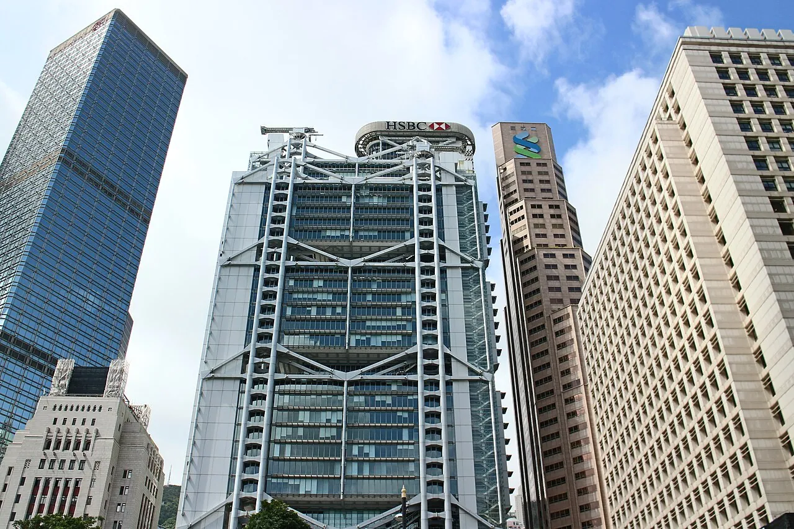

1/8 · Exterior · The Hong Kong headquarters of HSBCPhoto: Craddocktm · CC BY-SA 3.0 · source2/8 · Exterior · The HSBC Building in Hong Kong in 2016Photo: Choinowski · CC BY-SA 4.0 · source

3/8 · Exterior · HSBC Building (Hong Kong)Photo: Suicasmo · CC BY-SA 4.0 · source4/8 · Interior · HSBC Hong Kong headquarters building, Hong KongPhoto: Deror_avi · CC BY-SA 3.0 · source5/8 · Interior · HSBC Hong Kong headquarters building, Hong KongPhoto: Deror_avi · CC BY-SA 3.0 · source6/8 · Interior · HSBC Hong Kong headquarters building, Hong KongPhoto: Deror_avi · CC BY-SA 3.0 · source7/8 · Context · HSBC Building & Bank of China TowerPhoto: Suicasmo · CC BY-SA 4.0 · source8/8 · Context · Hong Kong, Tsim Sha Tsui (Kowloon), viev from 30th floor of "iSQUARE" to WestPhoto: Ralf Roletschek · CC BY 3.0 · source
HSBC Main Building is a headquarters building of The Hongkong and Shanghai Banking Corporation, which is today a wholly owned subsidiary of London-based HSBC Holdings. It is located on the southern side of Statue Square near the location of the old City Hall, Hong Kong (built in 1869, demolished in 1933). The previous HSBC building was built in 1935 and demolished to make way for the current building. The address remains as 1 Queen's Road Central (the north facing side of the building was served by Des Voeux Road Central, which was the seashore, making Queen's Road the main entrance, in contrast to the current primary access coming from Des Voeux Road).
The new building was designed by the British architect Norman Foster and civil & structural engineers Ove Arup & Partners with service design by J. Roger Preston & Partners. It was constructed by the John Lok / Wimpey Joint Venture. From the concept to completion, it took seven years (1978–1985). The building is 178.8 metres high with 47 storeys and four basement levels. The building has a modular design consisting of five steel modules, which were prefabricated in the UK by Scott Lithgow Shipbuilders near Glasgow and shipped to Hong Kong. About 30,000 tons of steel and 4,500 tons of aluminium were used.